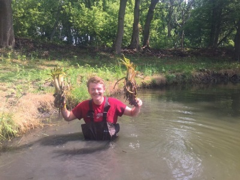

Interdisciplinary Passion-Follower
-
As a gardener and environmental restorationist, I have developed a keen appreciation for details: growing conditions,
land management, and the variety of species that make up our ecosystem.
-
As a novice web developer and field intern, I have built up the self-drive and motivation to complete daunting
tasks from scratch, (like building this website) through self-teaching and painstaking concentration, to build up
portfolio of passion projects.